측량및지형공간정보산업기사 (2010-05-09 기출문제)
1과목: 응용측량
1. 지표에 설치된 중심선을 기준으로 터널 입구에서 굴착을 시작하고 굴착이 진행됨에 따라 터널 내의 중심선을 설정하는 작업은?
- 예측
- 조사
- 지하설치
- 지표설치
(정답률: 알수없음)

2. 철도 곡선부의 캔트량을 계산할 때 필요 없는 요소는?
- 궤간
- 속도
- 교각
- 곡선의 반지름
(정답률: 알수없음)
3. 경관을 일반적으로 경관구성 요소에 의하여 시점계, 대상계, 경관장계, 상호계로 구분할 때 경관장계에 대한 설명으로 옳은 것은?
- 인식의 주체
- 인식대상이 되는 사물
- 대상을 둘러싸고 있는 환경
- 각 구성요인과 성격 사이에 존재하는 관계
(정답률: 30%)
4. 완화곡선의 캔트(cant)계산에서 동일한 조건에서 반지름만을 2배로 증가시키면 캔트는?
- 4배로 증가
- 2배로 증가
- 1/2로 감소
- 1/4로 감소
(정답률: 알수없음)
5. 두점 AB를 연결하는 터널을 굴진하고자 한다. A점의 좌표는 (1000.00, 1000.00)이고 B점의 좌표는 (2000.00, 1820.55)일 때 터널의 거리는? (단, 좌표의 단위는 m이다.)
- 2704.52m
- 23⑤.31m
- 1799.44m
- 1293.56m
(정답률: 70%)
6. 지구에 연직방향인 A, B 2개의 수직 터널에 의해서 터널 내외를 연결하는 경우, 터널 외에서 수직 터널간의 거리가 400m일 때, 수직 터널 깊이가 500m라면 터널 내에서의 두 수직 터널간 거리는? (단, 지구는 반지름 6370km의 구로 가정한다.)
- 399.969m
- 399.992m
- 400.008m
- 400.031m
(정답률: 알수없음)
7. 댐 측량의 일반적 순서는?
- 조사계획측량-실시설계측량-안전관리측량
- 조사계획측량-안전관리측량-실시설계측량
- 실시설계측량-조사계획측량-안전관리측량
- 실시설계측량-안전관리측량-조사계획측량
(정답률: 알수없음)
8. 다음 표와 같은 트래버스 계산에서 △ABC의 면적은?
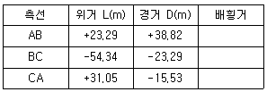
- 756.35m2
- 783.53m2
- 1449.52m2
- 2142.68m2
(정답률: 알수없음)
9. 단곡선 설치에서 접선과 현이 이루는 각을 이용하는 곡선설치 방법으로 정확도가 비교적 높아 많이 이용되는 것은?
- 접선에 대한 지거법
- 지거에 의한 설치법
- 장현에서 종거에 의한 설치법
- 편각에 의한 설치법
(정답률: 알수없음)
10. 하천측량을 통해 유속(V)과 유적(A)을 관측하여 유량(Q)을 계산하는 공식은?
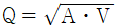
- Q=AㆍV
- Q=A2ㆍV
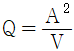
(정답률: 알수없음)
11. 지상 9km2의 면적을 지도상에서 36cm2로 표시하기 위한 축척은?
- 1:30000
- 1:40000
- 1:50000
- 1:60000
(정답률: 알수없음)
12. 하천측량에서 수애선측량에 대한 설명으로 옳지 않은 것은?
- 수애선은 평수위에 따른 경계선이다.
- 수애선은 교호수준측량에 의해 결정된다.
- 수애선은 수면과 하안의 경계선을 말한다.
- 수애선은 동시관측에 의한 방법과 심천측량에 의한 방법이 있다.
(정답률: 알수없음)
13. 세변이 30m, 40m, 50m인 삼각형의 면적은 얼마인가?
- 1200m2
- 900m2
- 600m2
- 300m2
(정답률: 80%)
14. 원곡선의 설치에 필요한 요소가 아닌 것은?
- 접선길이(T.L)
- 이정량(△R)
- 곡선길이(C.L)
- 외할(E)
(정답률: 알수없음)
15. 그림과 같은 도로계획면을 만들고자 한다. 이 단면의 넓이는 얼마인가? (단, 좌표의 단위 : m)
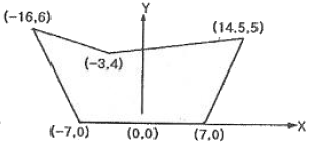
- 122.0m2
- 98.0m2
- 87.6m2
- 78.8m2
(정답률: 알수없음)
16. 하천의 유속측정에 있어서 최소유속, 최대유속, 평균유속, 표면유속의 4가지 유속은 크기가 다르게 나타난다. 이 4가지 유속을 하천의 표면에서부터 하저에 이르기까지 일반적으로 나타나는 순서대로 옳게 열거한 것은?
- 표면유속-최대유속-최소유속-평균유속
- 표면유속-평균유속-최대유속-최소유속
- 표면유속-최소유속-평균유속-최대유속
- 표면유속-최대유속-평균유속-최소유속
(정답률: 알수없음)
17. 다음 중 하천측량에 해당되지 않는 것은?
- 수위관측
- 조석관측
- 유속관측
- 유량관측
(정답률: 알수없음)
18. 하천의 유속 측정에 있어서 수면으로부터 깊이가 0.2h, 0.6h, 0.8h인 지점의 유속이 0.562m/sec, 0.497m/sec, 0.364m/sec일 때, 평균 유속이 0.480m/sec 이었다면 이 평균 유속을 구한 방법으로 옳은 것은? (단, h : 하천의 수심)
- 1점법
- 2점법
- 3점법
- 4점법
(정답률: 87%)
19. 단곡선 설치시 교각 60°, 반지름 200m일 경우 접선장은 얼마인가?
- 1⑤.47m
- 115.47m
- 116.47m
- 117.47m
(정답률: 알수없음)
20. 노선측량의 곡선에 대한 설명으로 옳지 않은 것은?
- 클로소이드 곡선은 완화곡선의 일종이다.
- 철도의 종단곡선은 주로 원곡선이 사용된다.
- 클로소이드 곡선은 고속도로에 적합하다.
- 클로소이드 곡선은 곡률이 곡선의 길이에 반비례한다.
(정답률: 알수없음)
2과목: 사진측량 및 원격탐사
21. 촬영고도 3000m, 초점거리 20cm인 카메라로 평지를 촬영한 밀착사진의 크기가 23cm×23cm이고, 종중복도 54%, 횡중복도 30%인 연직사진의 스테레오 모델(stereomodel)의 면적은?
- 6.83km2
- 5.83km2
- 4.83km2
- 3.83km2
(정답률: 30%)
22. 초점거리가 200mm인 카메라로 해면고도 2500m의 항공기에서 평균해발 300m의 지역을 촬영하였을 때 사진축척은?
- 1:10000
- 1:11000
- 1:12500
- 1:14000
(정답률: 알수없음)
23. 편위수정에 있어서 만족해야 할 3가지 조건으로 옳지 않은 것은?
- 샤임 프러그 조건
- 타이 포인트 조건
- 광학적 조건
- 기하학적 조건
(정답률: 62%)
24. 인공위성을 이용하여 영상을 취득하는 경우에 대한 설명으로 옳지 않은 것은?
- 관측이 좁은 시야각으로 행하여지므로 얻어진 영상은 정사투영영상에 가깝다.
- 회전 주기가 일정하므로 반복적인 관측이 가능하다.
- 다중 파장대 영상은 이용한 다양한 정보의 취득이 가능하다.
- 필요한 시점의 영상을 신속하게 수신할 수 있다.
(정답률: 알수없음)
25. GIS 자료의 저장방식은 파일 저장방식과 DBMS(Data Base Management System)방식으로 구분할 때 파일 저장방식에 비해 DBMS 방식이 갖는 특징으로 옳지 않은 것은?
- 자료의 신뢰도가 일정 수준으로 유지될 수 있다.
- 새로운 응용프로그램을 개발하는데 용이하다.
- 시스템이 간단하여 경제적이다.
- 사용자 요구에 맞는 다양한 양식의 자료를 제공할 수 있다.
(정답률: 50%)
26. 상호표정의 인자로만 짝지어진 것은?
- k, bx
- λ, by
- Ω, Sx
- ω, bz
(정답률: 60%)
27. 축척 1:10000인 항공사진을 스캐닝하여 영상을 만들고자 한다. 스캐닝 해상력을 1200dpi로 설정했다면 영상소(pixel) 하나의 지상에서의 공간해상력은 약 얼마인가?
- 10.6cm
- 21.2cm
- 26.4cm
- 42.4cm
(정답률: 알수없음)
28. 지리정보시스템구축에 필요한 위치정보의 자료취득방법으로 알맞은 것은?
- GIS
- GPS
- PC
- TIN
(정답률: 73%)
29. 항공 라이다(LiDAR)의 기본구성요소가 아닌 것은?
- GPS(Global Positioning System)
- SAS(Simultaneous Adjustment System)
- 항공레이저스캐너(AirborneLaserScanner)
- INS(Inertial Navigation System)
(정답률: 46%)
30. 그림의 2차원 쿼드트리(quadtree)의 총 면적은 얼마인가? (단, 최하단에서 하나의 면적을 1로 가정한다.)
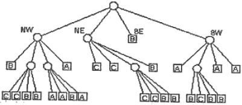
- 16
- 25
- 64
- 128
(정답률: 알수없음)
31. 내부표정에 대한 설명으로 옳지 않은 것은?
- 사진의 주점을 조정한다.
- 사진의 초점거리를 조정한다.
- 축척과 경사를 조정한다.
- 렌즈의 왜곡을 보정한다.
(정답률: 알수없음)
32. 원격탐사 자료의 재배열(Resampling) 방법 중 공일차내삽법(Bilinear lnterpolation)의 특징으로 옳지 않은 것은?
- 원격탐사 영상 내 데이터 값의 변질을 최대한 방지할 수 있으므로 토지피복의 분류 처리 등에 정확도를 확보할 수 있다.
- 최근린내삽법(Nearest Neighbour Interpolation)을 적용했을 때 나타나는 계층현상(Stair Step)을 방지할 수 있다.
- 서로 공간해상도가 다른 영상 간의 기하학적 보정에 적용했을 때보다 공간적으로 정밀한 영상을 만들 수 있다.
- 입방체내삽법(Cubic Convolution)을 적용했을 때 보다 처리시간을 줄일 수 있다.
(정답률: 7%)
33. 평지를 촬영고도 1500m로 촬영한 연직사진이 있다. 이 밀착 사진 상에 있는 건물 상단과 하단, 두 점간의 시차차를 관측한 결과 1mm이었다. 이 건물의 높이는? (단, 사진기의 초점거리는 15cm, 사진면의 크기는 23×23cm, 종중복도 60% 이다.)
- 10m
- 12.3m
- 15m
- 16.3m
(정답률: 30%)
34. 표정점을 선점할 때의 유의사항으로 옳은 것은?
- 원판의 가장자리로부터 1cm 이내에 나타나는 점을 선택하여야 한다.
- 시간적으로 일정하게 변하는 점을 선택하여야 한다.
- 표정점은 X.Y.H 가 동시에 정확하게 결정할 수 있는 점을 선택하여야 한다.
- 측선을 연장한 가상점을 선택하여야 한다.
(정답률: 알수없음)
35. 초점거리 150m, 촬영고도 4500m인 항공사진에서 사진측량의 일반적인 평면 허용 오차 범위는?
- 4.5~5.2m
- 1.5~3.0m
- 1.0~2.0m
- 0.3~0.9m
(정답률: 알수없음)
36. 벡터자료에 위상이 부여됨으로써 시 행정구역을 나타내는 폴리곤과 그 안의 동 행정구역들을 표현하는 폴리곤과의 관계를 나타내는 특성은?
- 인접성
- 근접성
- 계급성
- 연결성
(정답률: 알수없음)
37. GIS의 공간분석에서 선형의 공간객체의 특성을 이용한 관망(Network) 분석기법을 통하여 이루어질 수 있는 분석과 가장 거리가 먼 것은?
- 도로나 하천 등 선형의 관거에 걸리는 부하의 예측
- 하나의 지점에서 다른 지점으로 이동시 최적 경로의 선정
- 창고나 보급소, 경찰서, 소방서와 같은 주요 시설물의 위치 선정
- 특정 주거지역의 면적 산정과 인구 파악을 통한 인구 밀도의 계산
(정답률: 알수없음)
38. GIS 자료 처리(구축) 절차에 대한 순서로 옳은 것은?
- 수집-저장-자료관리-검색
- 수집-자료관리-검색-저장
- 자료관리-수집-저장-검색
- 자료관리-저장-수집-검색
(정답률: 알수없음)
39. 사진판독에서 대상물이 갖는 빛의 반사에 의해 나타나는 판독요소로 낙엽수와 침엽수, 토양의 습윤도 등의 판독에 사용되는 요소는?
- 형상(shape)
- 질감 (texture)
- 색조(tone, color)
- 모양(pattern)
(정답률: 70%)
40. GIS의 일반적인 구성요소가 아닌 것은?
- 컴퓨터 하드웨어
- 컴퓨터 소프트웨어
- 공간데이터베이스
- 메타데이터
(정답률: 54%)
3과목: GIS 및 GPS
41. 수평면상의 A점과 B점간의 거리가 20km라 하면, A점에서 B점을 시준할 수 있는 측표 높이는 최소 얼마 이상인가? (단, 지구의 반경은 6370km이며, 광선의 굴절은 무시함)
- 1.57m
- 3.14m
- 15.70m
- 31.40m
(정답률: 알수없음)
42. 각 관측에서 시준오차가 ±5" 이고 눈금의 읽기오차는 없는 경우 4배각법으로 관측할 때 관측오차는?
- ±1.0"
- ±1.4"
- ±1.6"
- ±3.5"
(정답률: 알수없음)
43. 다음 중 러시아에서 운용되는 위성합법체계는 무엇인가?
- GPS
- Galileo
- GLONASS
- JRANS
(정답률: 알수없음)
44. 다음 중 지형의 표시방법이 아닌 것은?
- 등고선법
- 음영법
- 영선법
- 방향법
(정답률: 73%)
45. 수준측량에서 10km를 왕복 곽측한 경우에 허용오차가 ±15mm라면 3km를 왕복 관측한 경우의 허용오차는?
- ±5mm
- ±8mm
- ±12mm
- ±15mm
(정답률: 50%)
46. 다음 중 기상관측위성의 종류로 옳은 것은?
- LANDSAT
- SPOT
- NOAA
- SKYLAB
(정답률: 알수없음)
47. 축척 1:500 지형도를 기초로 하여 축척 1:5000의 지형도를 제작하고자 한다. 축척 1:5000 지형도 한 도엽에는 1:500 지형도가 몇 매 포함되는가?
- 50매
- 100매
- 150매
- 200매
(정답률: 알수없음)
48. 측량에서 사용되는 용어에 대한 설명으로 옳지 않은 것은?
- 최확값은 일련의 관측값들로부터 얻어질 수 있는 참값에 가장 가까운 추정값이다.
- 잔차란 참값과 관측값의 차를 말한다.
- 경중률은 일반적으로 표준 편차의 제곱에 반비례한다.
- 경중률은 어느 한 관측값과 이와 연관된 다른 관측값에 대한 상대적인 신뢰성을 표현하는 척도를 말한다.
(정답률: 알수없음)
49. 수준기인 기포관의 감도에 대한 설명으로 옳지 않은 것은?
- 기포관의 감도란 기포가 1눈금 움질일 때 기포관 축이 경사되는 각도를 말한다.
- 기포관의 감도가 좋을수록 정밀도는 높다.
- 기포관의 감도는 기포관의 곡률반지름과 액체의 점성에 가장 큰 영향을 받는다.
- 기포관의 기포 1눈금이 끼인 중심각이 작으면 정밀도가 떨어진다.
(정답률: 알수없음)
50. 삼각측량의 삼각망 구성 중 정확도가 높은망부터 나열한 것은?
- 단열삼각망-유심삼각망-사변형삼각망
- 사변형삼각망-유심삼각망-단열삼각망
- 유심삼각망-단열삼각망-사변형삼각망
- 단열삼각망-사변형삼각망-유심삼각망
(정답률: 알수없음)
51. 삼변측량에서 cosA를 구하는 식으로 옳은 것은?
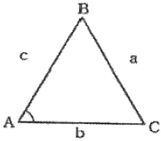
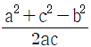
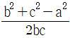
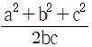
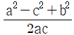
(정답률: 알수없음)
52. 각측량에서 망원경을 정위, 반위로 측정하여 평균값을 취함으로써 제거할 수 없는 오차는?
- 시준선의 편심오차
- 시준 오차
- 시준축 오차
- 수평축 오차
(정답률: 알수없음)
53. 기지수준점 A, B, C에서 신설점 P의 수준측량 결과가 표와 같을 때 P점의 최확값은?
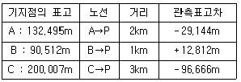
- 103.324m
- 103.334m
- 103.339m
- 103.342m
(정답률: 알수없음)
54. 완전한 검산을 할 수 있어 정밀한 측량에 이용되나 중간점이 많을 때는 계산이 복잡한 야장기입법은?
- 고차식
- 기고식
- 황단식
- 승강식
(정답률: 알수없음)
55. 편심계산에 필요한 편심요소로 짝지어진 것은?
- 편심각과 편심거리
- 편심각과 편심고도
- 편심거리와 편심방위
- 편심방위와 편심고도
(정답률: 알수없음)
56. DGPS측량의 정확도에서 무시할 수 있는 오차는?
- 시차에 의한 영향
- 위성궤도정보의 정확도
- 전리층과 대류권의 영향
- 수신기 내부오차와 방해전파
(정답률: 17%)
57. 결합 트래버스에서 A점에서 B점까지의 합위거가 152.70m 합경거가 653.70m일 때 폐합오차는 얼마인가? (단, A점 좌표 XA=76.80m, YA=97.20m, B점 좌표 XB=229.62m, YB=750.85m)
- 0.11m
- 0.12m
- 0.13m
- 0.14m
(정답률: 알수없음)
58. A.B 두점의 표고가 각각 118m, 145m이고, 수평거리가 270m이며, AB간은 등경사이다. AB선상의 표고 120m, 130m, 140m되는 점은 A점으로부터 각각 수평으로 몇 m 떨어진 지점인가?
- 10m, 110m, 210m
- 20m, 120m, 220m
- 20m, 110m, 220m
- 10m, 120m, 210m
(정답률: 알수없음)
59. 기준극을 고정하여 기계를 설치하고 이동국으로 측량하며 모뎀을 이용하여 실시간으로 좌표를 얻음으로써 현황측량 등에 이용하는 GPS 측량기법은 무엇인가?
- DGPS
- RTK
- 절대측위
- 정지측위
(정답률: 55%)
60. 축척 1:1000 지도의 표고점의 정확도 표준으로 옳은 것은? (단, Δh는 주곡선 간격)
- 표고점의 표고 표준편차는 도상거리 0.5mm 이내이다.
- 표고점의 표고 표준편차는 Δh/3 이내 이다.
- 표고점의 표고 표준편차는 Δh/2 이내 이다.
- 표고점의 표고 표준편차는 2Δh 이내 이다.
(정답률: 50%)
4과목: 측량학
61. 공공측량의 실시를 위한 공공측량 작업계획서는 누가 작성하여 제출하여야 하는가?
- 국토해양부장관
- 국토지리정보원장
- 공공측량시행자
- 대한측량협회장
(정답률: 58%)
62. 지도 등의 간행심사에 대한 설명으로 옳지 않은 것은?
- 기본측량 성과 등을 활용하여 지도를 간행하여 판매하거나 배포하려는 자는 국토해양부장관의 심사를 받아야 한다.
- 지도를 간행하려는 자는 사용한 기본측량성과 또는 측량기록을 지도 등에 명시하여야 한다.
- 측량성과 심사수탁기관은 지도 등의 간행심사를 할 때에는 도곽설정, 축척 및 투영, 지형ㆍ지물 및 지명의 표시, 주기 및 기호표시, 난외표시 등이 적정한지 여부를 심사한다.
- 간행심사를 받고 간행한 지도 등을 다시 간행할 경우에는 재간행 지도의 사본 제출 등의 별도의 절차가 필요없다.
(정답률: 알수없음)
63. 공공측량에 관한 설명으로 가장 적합한 것은?
- 토지를 지적공부에 등록하거나 지적공부에 등록된 경계점을 지상에 복원하기 위한 측량
- 모든 측량의 기초가 되는 공간정보를 제공하기 위하여 국토해양부장관이 실시하는 측량
- 공공의 이해 또는 안전과 밀접한 관련이 있는 측량으로서 대통령령으로 정하는 측량
- 순수 학술연구나 군사 활동을 위한 측량
(정답률: 알수없음)
64. 관보에 게재하는 측량기준점표지 설치에 대한 고시 사항이 아닌 것은?
- 기준점의 명칭 및 번호
- 좌표 및 표고
- 측량기준점 표지 관리책임기관
- 측량성과 보관 장소
(정답률: 40%)
65. 측량업의 종류에 해당되지 않는 것은?
- 공간영상도화업
- 수치지도제작업
- 연안조사측량업
- 특수측량업
(정답률: 알수없음)
66. 측량ㆍ수로조사및지적에관한법률에 의한 용어의 정의로 옳지 않은 것은?
- 일반측량이란 기본측량, 공공측량, 지적측량 및 수로측량을 말한다.
- 지적측량이란 토지를 지적공부에 등록하거나 지적공부에 등록된 경계점을 지상에 복원하기 위하여 필지의 경계 또는 좌표와 면적을 정하는 측량을 말한다.
- 수로측량이란 해양의 수심ㆍ지구자기ㆍ중력ㆍ지형ㆍ지질의 측량과 해안선 및 이에 딸린 토지의 측량을 말한다.
- 기본측량이란 모든 측량의 기초가 되는 공간정보를 제공하기 위하여 국토해양부장관이 실시하는 측량을 말한다.
(정답률: 알수없음)
67. 측량의 정확도 확보, 중복배재 등을 목적으로 일반측량을 한 자에게 측량성과 및 측량기록을 요구할 수 있는 자는?
- 국토지리정보원장
- 국립해양조사원장
- 시ㆍ도지사
- 측량업자
(정답률: 50%)
68. 측량기준점의 구분에 있어서 국가기준점에 해당하지 않는 것은?
- 위성기준점
- 수준점
- 중력점
- 지적도근점
(정답률: 60%)
69. 국토해양부장관은 측량기본계획을 몇 년마다 수립하여야 하는가?
- 1년
- 3년
- 5년
- 10년
(정답률: 알수없음)
70. 측량업자인 법인이 파산 또는 합병 외의 사유로 해산한 경우에는 법인의 청산인이 사실이 발생한 날부터 최대 며칠 이내에 그 사실을 신고하여야 하는가?
- 10일
- 15일
- 30일
- 60일
(정답률: 67%)
71. 측량ㆍ수로조사및지적에관한법률 제정의 목적으로 옳지 않은 것은?
- 국토의 효율적 관리
- 해양교통의 안전에 기여
- 국민의 소유권 보호에 기여
- 업무의 규제와 경비절감에 기여
(정답률: 73%)
72. 측량기술자가 아님에도 불구하고 측량ㆍ수로조사및지적에관한법률에서 정하는 측량(수로측량 제외)을 한 자에 대한 벌칙 기준으로 옳은 것은?
- 3년 이하의 징역 또는 3천만원 이하의 벌금
- 2년 이하의 징역 또는 2천만원 이하의 벌금
- 1년 이하의 징역 또는 1천만원 이하의 벌금
- 300만원 이하의 과태료
(정답률: 알수없음)
73. 우리나라 직각좌표계 원점에 대한 경위도가 옳은 것은?
- 서부좌표계-경도 : 동경124°, 위도 : 북위38°
- 중부좌표계-경도 : 동경126°, 위도 : 북위38°
- 동부좌표계-경도 : 동경128°, 위도 : 북위38°
- 동해좌표계-경도 : 동경131°, 위도 : 북위38°
(정답률: 알수없음)
74. 1:25000 지형도의 도곽구성으로 옳은것은?
- 경위도 15′차의 경위선에 의해 구획되는 지역
- 경위도 7′ 30″차의 경위선에 의해 구획되는 지역
- 경위도 10′차의 경위선에 의해 구획되는 지역
- 경위도 1′ 30″차의 경위선에 의해 구획되는 지역
(정답률: 22%)
75. 지도도식규칙을 따르지 않아도 되는 경우는?
- 군사훈련을 위한 군사용 지도
- 기본측량의 성과로서 지도를 간행하는 경우
- 공공측량의 성과를 간접 이용하여 지도에 관한 간행물을 발간하는 경우
- 기본측량의 성과를 직접 이용하여 지도에 관한 간행물을 발간하는 경우
(정답률: 65%)
76. 기본측량을 실시하여 측량성과를 고시할 때 포함되어야 할 사항과 거리가 먼 것은?
- 측량의 종류
- 설치한 측량기준점의 수
- 측량실시 기관
- 측량성과의 보관 장소
(정답률: 70%)
77. 일반측량을 시행하는데 그 기초로 할 수 없는 자료는?
- 기본측량성과
- 일발측량성과
- 공공측량성과
- 기본측량기록
(정답률: 39%)
78. 측량ㆍ수로조사 및 지적에 관한 법률에서 정하는 측량(수로조사 제외)을 할 수 있는 기술자가 아닌 것은?
- 측량 및 지형공간정보 기사
- 지도 제작 기능사
- 도화 기능사
- 고등학교 졸업자로 2년의 측량업무를 수행한 자
(정답률: 28%)
79. 지명의 결정에 따른 지명의 고시 사항이 아닌 것은?
- 제정 또는 변경된 지명
- 소재지(행정구역으로 표시)
- 위치(경도 및 위도로 표시)
- 관련지역 표기 지도
(정답률: 알수없음)
80. 지리학적 경위도, 직각좌표, 지구중심 직교좌표, 높이 및 중력 측정의 기준으로 사용하기 위하여 위성기준점, 수준점 및 중력점을 기초로 정한 기준점은?
- 삼각점
- 경위도원점
- 통합기준점
- 지자기점
(정답률: 60%)